CRADLE OF PHILIPPINE ART

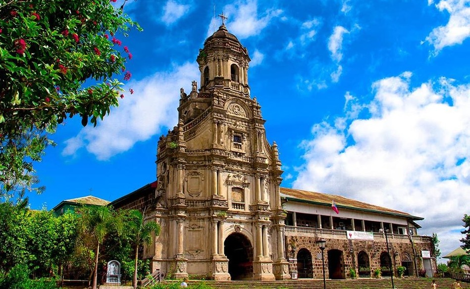
St. Jerome’s Parish Church in Morong
THE MUNICIPALITY OF MORONG
Welcome to Morong, Rizal—a town where history, culture, and natural beauty meet.
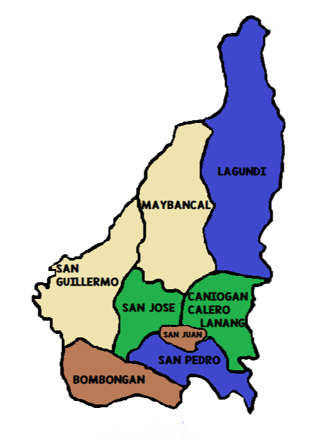
Municipality in Rizal Province
Morong, Rizal is a scenic municipality in the province of Rizal, Philippines, situated along the eastern shore of Laguna de Bay, the country’s largest lake with a surface area of about 911 km². The town is bordered by Baras to the north, Tanay to the east, Pililla to the south, and Laguna de Bay to the west. Morong covers an approximate land area of 40.04 km², with an elevation ranging from 2 meters near the lakeshore to around 250 meters in the foothills of the Sierra Madre Mountains.
The municipality features a mix of lowlands suitable for agriculture, rolling hills, and mountainous terrain that provide forested areas and eco-tourism opportunities. Several rivers and streams, including the Morong River, traverse the town, supplying water for irrigation and supporting local farms. Its fertile plains grow rice, vegetables, and other crops, while the hills and mountains offer stunning viewpoints overlooking Laguna de Bay.
View in Google Maps >>>
Experience a vibrant celebration of festivals, culture, and traditions that bring history and community to life. Colorful fiestas, lively rituals, and age-old customs invite visitors to immerse themselves in the rich heritage and joyful spirit of the local people, where every event is filled with music, dance, and laughter that have been passed down through generations.
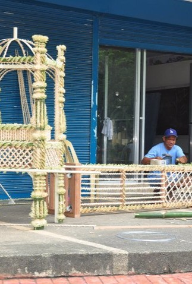
Kayas Kawayan
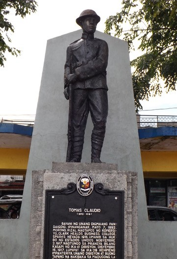
Tomás Claudio
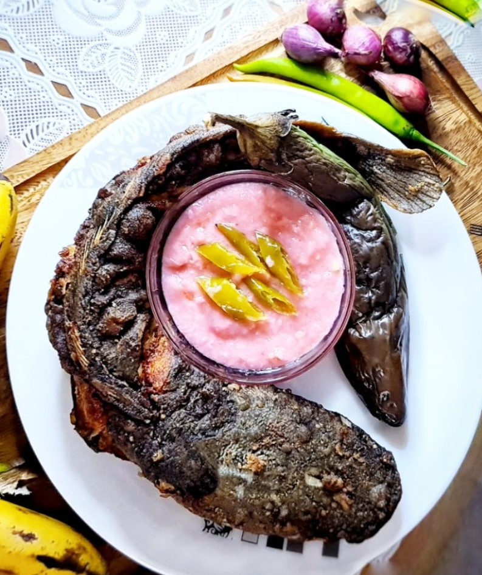
Balaw-Balaw (Fermented Sauce)
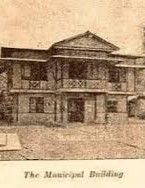
La Commandancia
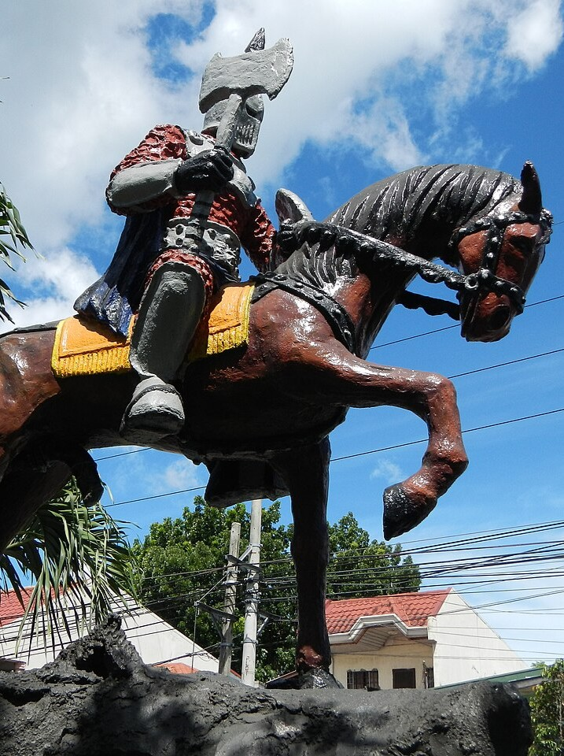
Caballeron Monument
Annual Festival in Morong, Rizal
The Sanrok sa Ringring Festival is a lively cultural celebration that honors a unique part of local heritage—its distinct way of speaking Tagalog with a singsong tone and a playful twist where the sound “D” is commonly replaced with “R.” For example, sandok (ladle) becomes sanrok, and dingding (wall) becomes ringring, reflecting a language style that has been part of the community’s identity for generations. This festival embraces and showcases this linguistic quirk, highlighting how everyday speech and expressions can become symbols of cultural pride and distinctiveness.
Beyond language, the festival also celebrates local traditions, community spirit, and creativity, often featuring colorful activities, performances, and gatherings that bring people together in joyful celebration. By spotlighting these quirky linguistic traits alongside cultural and culinary expressions, the Sanrok sa Ringring Festival offers visitors a fun and engaging way to appreciate the depth of local identity and heritage.
View more of the festivals and traditions >>>
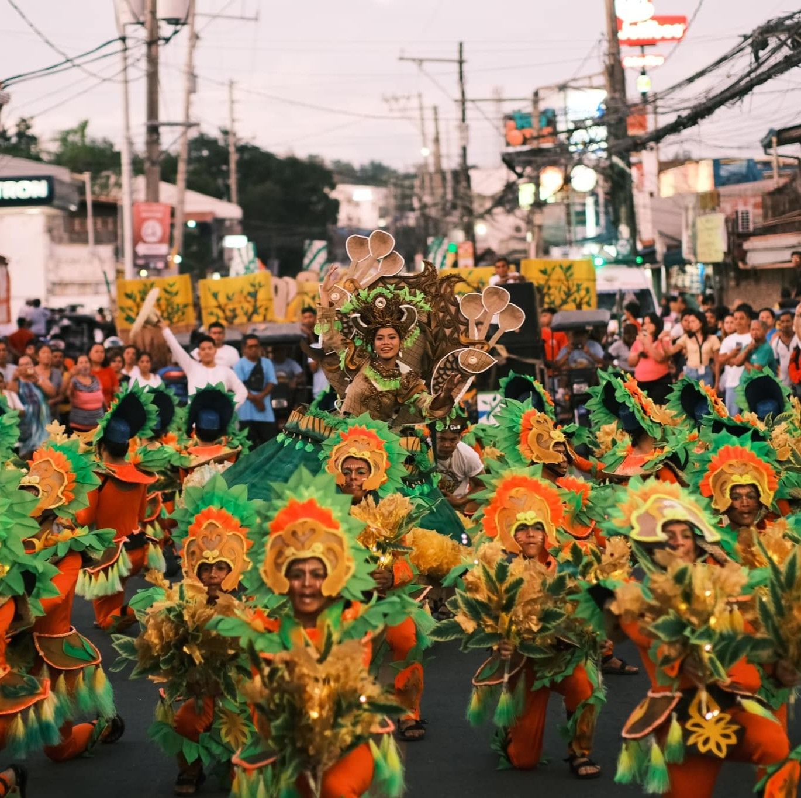
BALAW BALAW

A traditional Filipino dipping sauce and appetizer from Morong Rizal, featuring a savory, sour mixture of fermented rice, shrimp, and salt. It is typically served sautéed with garlic, onions, and tomatoes, acting as a perfect condiment for grilled/fried fish and steamed vegetables.
GINATAANG HIPON

Beloved seafood delicacy from Morong, Rizal featuring fresh shrimp cooked in rich coconut milk with vegetables and aromatic spices. This creamy and savory local dish highlights the town’s unique flavors and is best enjoyed with steamed rice, making it a favorite comfort food among Rizaleños and visitors alike.
Discover the scenic beauty and rich heritage of this lakeside town, where rolling hills, rivers, and historical sites create a perfect blend of nature and culture. From tranquil views of Laguna de Bay to charming old churches, ancestral homes, and local landmarks, every corner invites visitors to explore, experience, and immerse themselves in the town’s unique attractions and vibrant history.
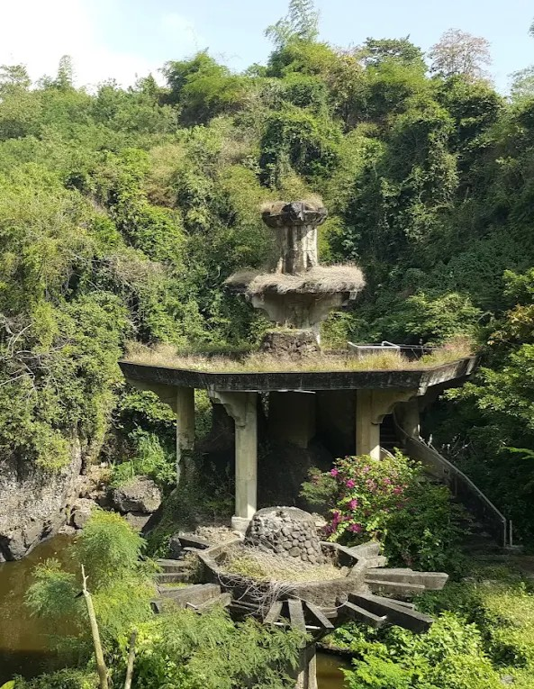
Uugong Park
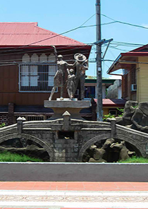
Morong Town Plaza
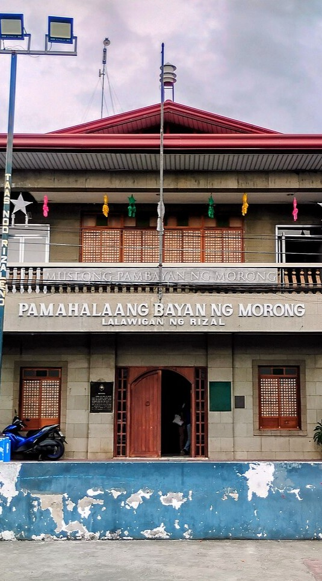
Morong Museum
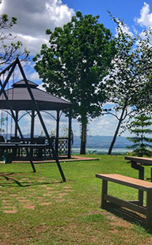
Manila East Lake View Farms
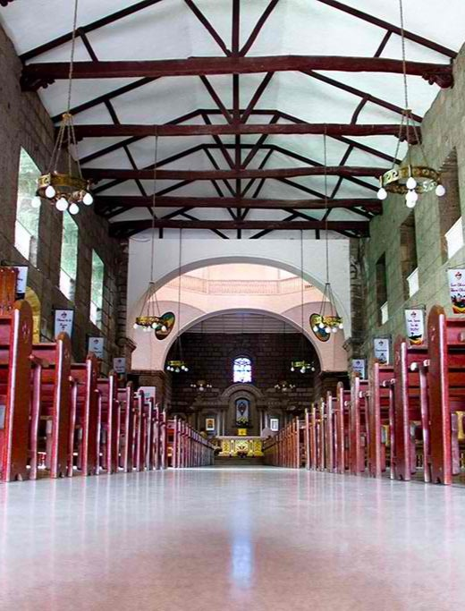
Turentigue St, Morong, Rizal
Saint Jerome church was built by Chinese artisans in 1615 with stone and mortars. Its design was distinct from Chinese-Baroque Architecture. It has two Chinese lion sculptures at the entrance that serve as the storey façade and the octagonal bell tower of the church. There are pock marks on the walls and surroundings of the church caused by bullet holes indicating fights between Katipuneros and Guardia Civils during the revolt of the Filipinos against the Spaniards in the later part of 19th century.
This church was constructed not only by men, but also women and children. Stones dug from a hill called Kay Ngaya; lime from the stones of the mountain Kay Maputi; sand and gravel from Morong River; and timber were contributed by the townspeople.
View more tourist attractions >>>
On January 16, 1572, Captain Juan Maldonado, a Spanish officer under Martin de Goiti, arrived at a thriving riverside community east of Manila and named it Moron after a town in Spain. The area had organized settlements along the river, while outlying barangays often conflicted. Starting in 1578, Franciscan missionaries Christianized the natives and built chapels (visitas), which eventually formed the pueblo called Pueblo de Moron, later renamed Morong.
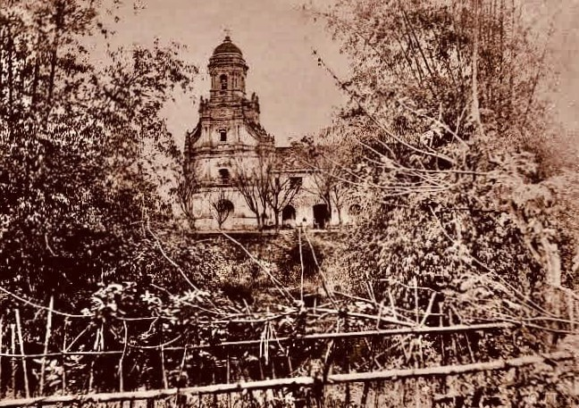
Pueblo de Morong became the provincial capital of the Franciscan Order, overseeing several visitas, including Baras, Tanay, Pililla, Cardona, Binangonan, and Teresa. As the settlements grew, some visitas gained independence: Pilang separated to form Pililla, followed by Binangonan in 1621, marking the gradual expansion and administrative development of the region.
View more of the history of Morong >>>